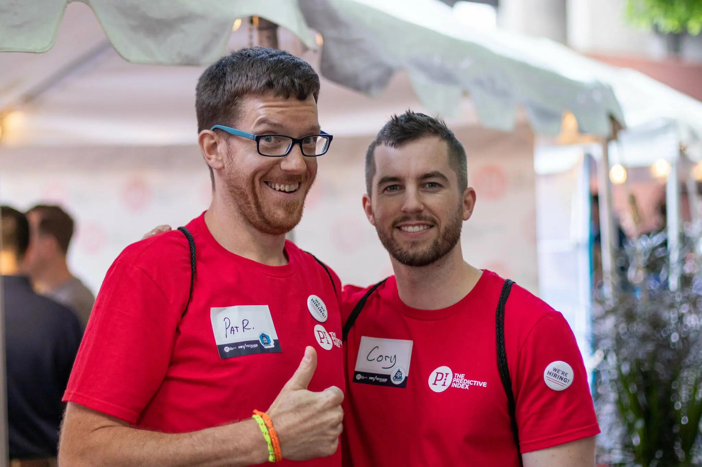

Schedule regular open meetings.: Schedule regular open meetings.
When communicating with team members through e-mail, text, instant message, and other forms of digital media, the meanings of messages can be easily misconstrued. The best team interaction often takes place in open, face-to-face meetings. In this type of setting, team members will both hear the words of your intended communication and the tone of voice you use while giving it.
2. Use appropriate body language.
The look on your face can say more than a thousand words. For instance, when a team member wears a scowl on their face while listening to a fellow employee’s ideas, the interaction between the two people will likely be lackluster. Using positive body language conveys interest, sincerity, and cooperation to team members. Here are some ways to show positive body language:
Smile.
Make eye contact.
Give a thumbs up.
Nod or show that you are actively listening to what they have to say.
A personalized leadership approach for each team member.
PI’s behavioral insights help leaders inspire and coach each employee in a way they truly connect with.
3. Speak simply.
When addressing team members, don’t attempt to wow them with your impressive vocabulary. Speaking with simple words and phrases will improve the likelihood of effectively communicating your message while decreasing the probability of appearing like a show-off. There’s nothing worse than having to Google a word you are not familiar with.
Speak simply :
team development means bonding at events
6. Establish ground rules for the team.
Establishing ground rules for a team will encourage order, efficiency, and healthy communication at meetings. Every member of the team should have a voice in the rule creation process. Rules should be agreed on by consensus. A few rules that might improve interaction among team members include:
Every team member will arrive at meetings on time.
Each team member is allowed to offer suggestions and provide ideas.
Only one team member will speak at any given time.
7. Encourage debate.
When team members are afraid to disagree with one another, they might blindly make important decisions without feeling confident about them. In this type of environment, only one or two team members might be responsible for making most, if not all, of the team decisions. Healthy debates inspire creativity and collaborative brainstorming. Keep in mind that in order to feel comfortable engaging in debate, your team has to be comfortable with each other. Regular team-building exercises may be helpful to make people more comfortable and trusting enough to debate without fear of offending anyone.
8. Show appreciation.
People respond better to courtesy than they react to impoliteness. Showing appreciation makes team members feel like they matter. Expressing gratitude, even for small acts, creates goodwill. Examples of displaying appreciation to team members include:
Congratulating a team member for developing a great idea for a new project
Thanking a team member for finishing an assignment before a deadline
Thanking team members for taking the time to listen to a presentation
Whether on the call-center floor, in a restaurant kitchen, or at a corporate meeting, the power of the team is greater than that of the individual. However, the mere existence of a team in an org chart certainly doesn’t call for efficiency. Ground-breaking teams are staffed with members who know how to successfully and respectfully communicate, challenge, and reward each other. Peer recognition helps build trust on teams.
Better understand your team with PI.
When looking to work well as a team, it helps to fully understand the people around you. Using tools like PI Team Discovery, you can take team interactions to the next level.
Team Discovery lets you uncover the collective behavioral identity of your team—known as your Team Type. Using the power of people data, you can visualize how each team member’s personality fits as part of the larger team dynamic.

Local News
Non-Stop Visits By Local Travellers To Famous Destinations In Kalaw Township
By Admin on 22 September 2023
The visiting of local travellers has been non-stop in famous tourist attraction sites of Kalaw township in Shan State, according to car rental services in Kalaw. “There are loads of places to visit in our town. Popular tourist destinations in Kalaw are Byake Taung, view of sea of clouds and Palaung Hill’s viewpoint where Palaung ethnic people are living. There are non-stop travellers,” said an official from a car rental service in Kalaw.
!.....
citizens, especially in well-developed countries, often utilize their spare time for reading. There is one thing that almost everybody can do without costing a fortune. This is nothing else but just reading. Truly, reading may not only be the first step towards learners’ study on the subject matter but also be beloved by nearly all from every corner of the globe. It will often be seen that citizens in well-developed countries throughout the world usually make good use of their spare time reading.!.....
Myanmar’s Seaborne Exports Surpass US$7 Billion By 19 January
By Admin on 22 September 2023
trade value reflected a drop of $2.376 billion compared to the corresponding period of last FY. Myanmar’s seaborne exports with international trade partners amounted to US$7.136 billion as of 19 January of the current financial year 2023-2024, while its imports surpassed exports with $10.66 billion, totalling $17.8 billion, the Ministry of Commerce’s statistics indicated.billion as of 19 ports surpassed exports with $10.66 billion, totalling $17.8 billion, the Ministry of Commerce’s statistics indicated.
!.....